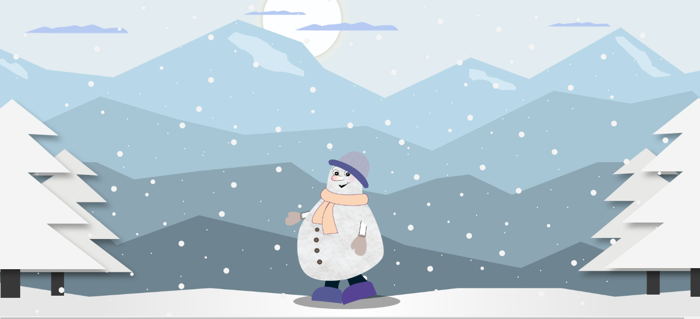
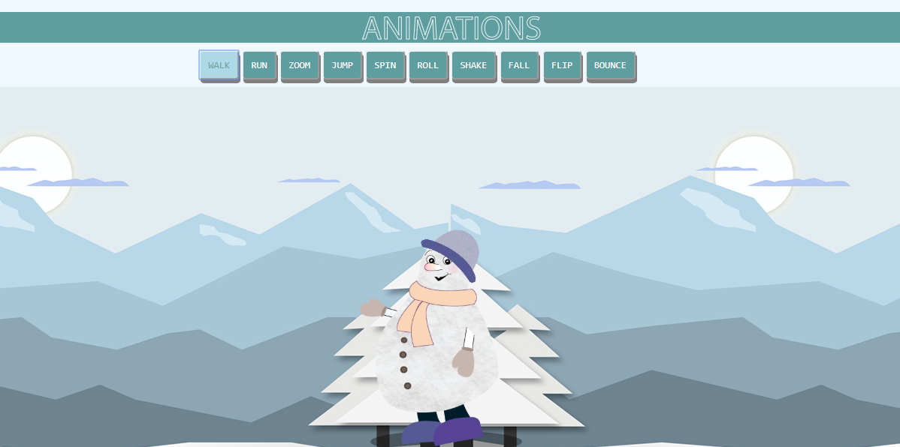
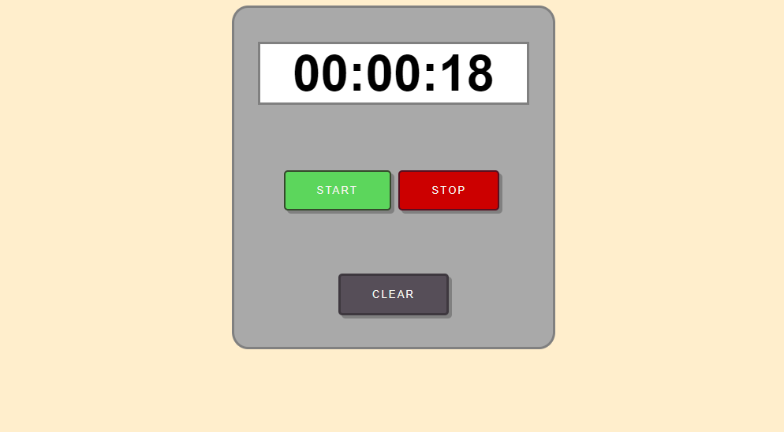
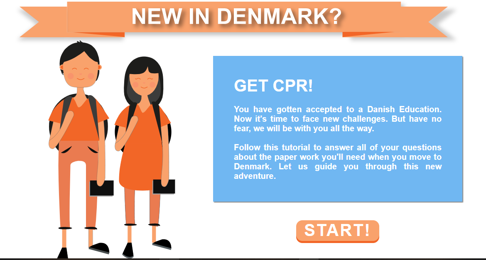

Theme 03: Basic Animation
04.01.01 Sprite animation on a background
 Animation DocumentationGoal:
Designing and creating a sprite animation on the background.
Process:
At the beginning of the assignment, I had to choose a source of inspiration for my drawing style which was animated movie “frozen”. I created a moodboard with visual elements and made a written analysis of chosen colors, strokes, shapes and textures. Then created my character and background from sketches(with all of the frames) to the final design drawn in illustrator. Then a walk-cycle animation of character on a background was created with HTML and CSS.
Gains:
- Learning to use Adobe Illustrator features
- Learning about basic principles of animation - dimensions, proportions, movements.
- Applying storyboard, style tile and other tools to the animation creation.
- Drawing sprite sheets and using sprite animation to create movement effect with HTML and CSS.
04.02.01 Javascript controlled animation
 AnimationsGoal:
Making a webpage with ten different CSS animations for character on javascript controlled functionality.
Process:
During this Assignment I could use the SVG character created in previous assignment. I focused on creating 10 animations by using HTML, CSS and Javascript. I also included sound that has the purpose of helping the user to understand the application.
Gains:
- Learning main principles of creating animation using only self-made illustrations and code.
- Learning more advanced code for creating interactive elements.
04.03.01 Project pool 1
 Project Pool 1 DocumentationIn this assignment I worked in pair to create a simple "Stop watch” project. By using HTML, CSS and Javascript we created a display with hours, minutes and seconds. We also tried to implement the clocking sound to the watch.
04.04.01 Link to your Onboarding
 Onboarding DocumentationGoal:
Creating an interactive, animated, web based onboarding sequence that explains an important aspect about moving to Denmark to be a student on KEA multimedia design.
Process:
In a group of four students we started the project by brainstorming and deciding about ideas of our onboarding. The main idea was to create an interactive tutorial where new students could get knowledge while accomplishing tasks about required documents. Then we designed the moodboard, personas collage about a fictive person representing our target audience, and style tile for design elements. After that, we had to create detailed storyboard where we described the plot, interactive and dramaturgical elements of the story. Our main Character had to go though several steps to learn about documentation work in Denmar. My responsibility in this project was to create part of the content for the story such as designing the characters and backgrounds. When all the elements were ready, we started coding onboarding with HTML, CSS, and Javascript. When we were satisfied with the solution, we conducted a peer review on it. The whole process was documented in a short pdf. Finally at the end we could present our solution during exhibition, where visitors could try and test it.
Gains:
- Learning more advanced code for creating interactive elements.
- Understanding of story and character development, use of style tile, moodboard and storyboard.
- Learning how to present project during the first exhibition
- Getting more experience in working in a group